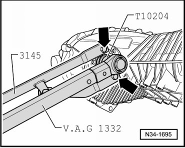
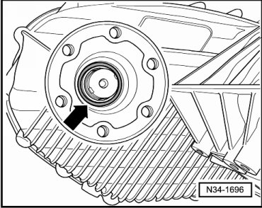
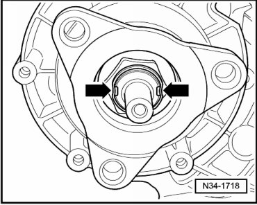
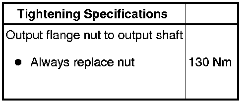

Front Driveshaft Output Flange Seal, with Transfer Case Installed
Front Driveshaft Output Flange Seal, with Transfer Case Installed
Special tools, testers and auxiliary items required
• Slide hammer (VW 771)
• Pulling hook (VW 771/37)
• Retainer (3145)
• Torque wrench (VAG 1332)
• Thrust piece (T10185)
• Socket (T10204)
• Sealing grease (G 052 128 A1)
• Loctite (648)
• 2 M10 x 25 bolts
Removing
- Remove front driveshaft. Refer to --> [ Front Driveshaft ] Removal and Installation.
- Secure counter holder (3145) with 2 M10 x 25 bolts to output flange - arrows -.

- Remove the output flange nut.
- Remove output flange.
- Pull out sealing ring using slide hammer-complete set (VW 771) and additional part for VW771 (VW 771/37).
- Clean threads of nut.
Installing
- Fill area between sealing lip and dust lip halfway with sealing grease (G 052 128 A1).
- Drive new seal until seated; be sure not to distort seal.

- Insert output flange.
- Lubricate new O-ring - arrow - with gear oil and insert.

- Coat threads of new nut with locking fluid loctite (648).
- Tighten new nut for output flange to specification.
- Secure nut at intended points - arrows - (e.g., with a drift).

The illustration shows securing the nut on the rear driveshaft output flange, securing the front driveshaft output flange is similar.
- Install front driveshaft. Refer to --> [ Front Driveshaft ] Removal and Installation.
- Check gear oil level in transfer case. Refer to --> [ Transfer Case Gear Oil Level, Checking ] Service and Repair.
